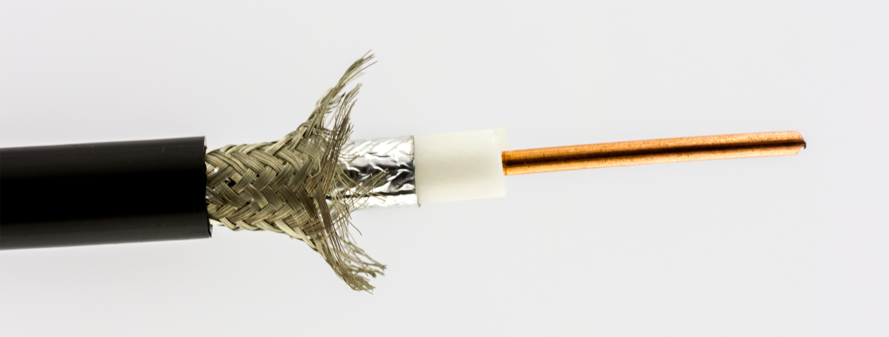

¿Qué es el cable coaxial?
Es un tipo de cable que contiene un conductor interno rodeado por una capa aislante, una malla metálica y una cubierta exterior. Se utiliza comúnmente en televisión por cable y redes antiguas.
Sus ventajas incluyen buena resistencia a la interferencia electromagnética y capacidad para transmitir señales a larga distancia.
